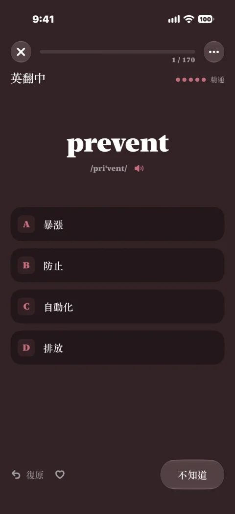
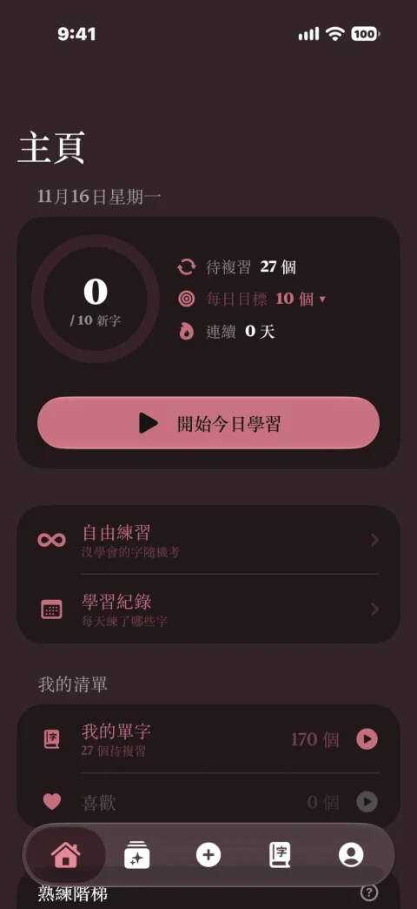
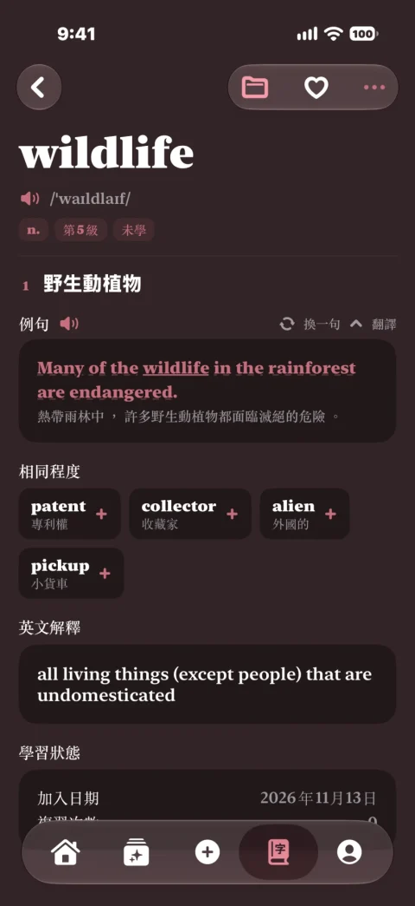
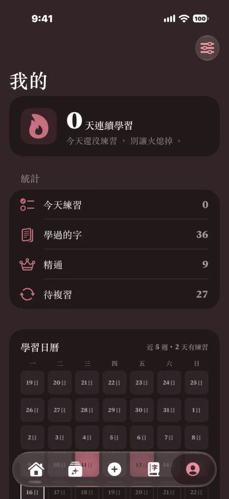
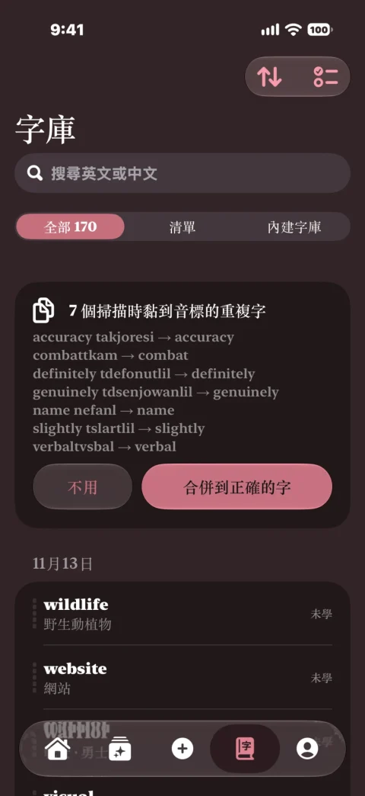
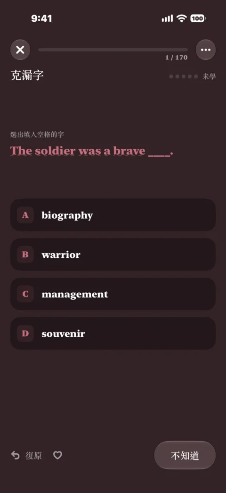
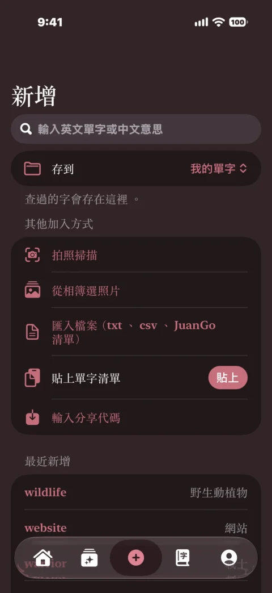

英翻中選意思
看單字選中文，想不起來就按「不知道」直接看答案。

進度環是今天的新字，旁邊是待複習的字數和連續天數，按「開始今日學習」就開始。

音標、例句和翻譯都在。例句不喜歡可以換一句，下面還列出同等級的字。

有練習的日子會標在日曆上，學過、精通和待複習的字數一眼就看到。

每個字都有分級、音標和中文解釋，多數附例句和翻譯。

翻卡片、英翻中、中翻英、克漏字、聽力和拼單字，可以自動安排，也能自己挑。
看單字選中文，想不起來就按「不知道」直接看答案。

例句挖掉一個字，從四個單字裡選出放回去的那個。

連字號先給，提示會補下一個字母，英式和美式拼法都算對。

字典裡沒有的字，會自動翻成繁體中文。

下載 IPA，用 Sideloadly 或 AltStore 簽名安裝，或用 Xcode 26 自己編譯。
iOS 26 以上，並在設定裡打開開發者模式。
每 7 天要重簽一次，學習資料不會消失。
預設只存在手機裡。用 Email 登入後會備份到雲端。